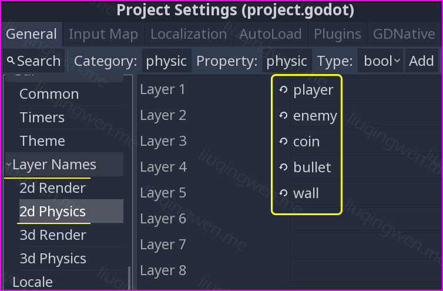
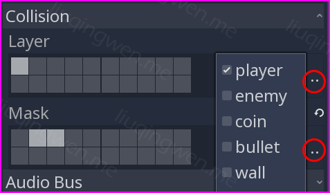
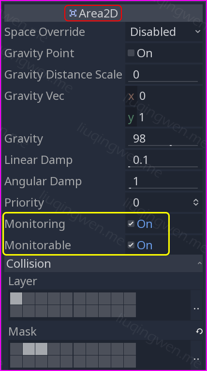
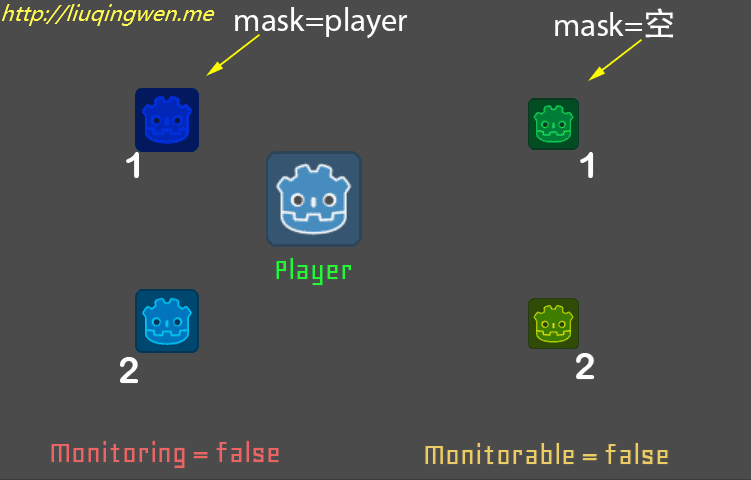
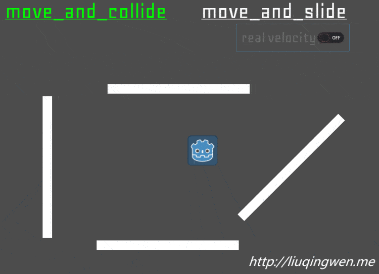
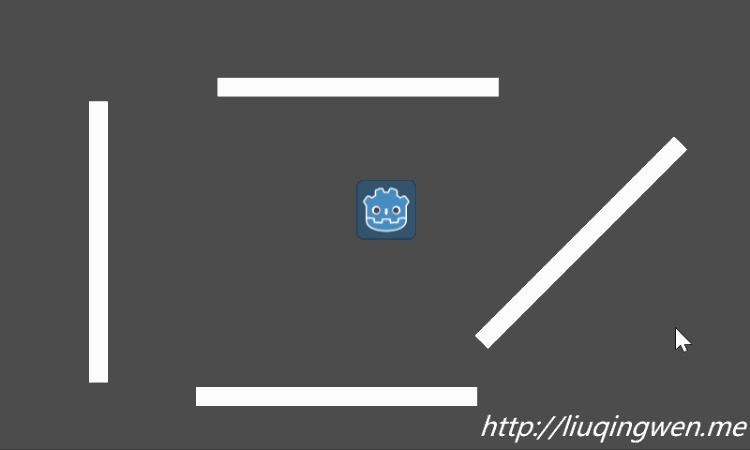
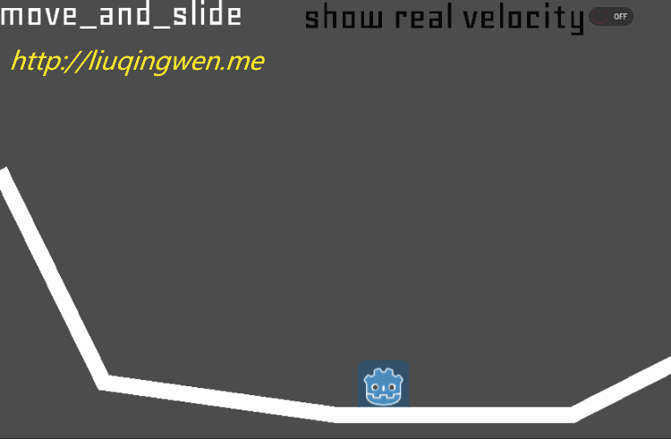

Godot3游戏引擎入门之十二：Godot碰撞理论以及KinematicBody2D的两个方法

一、前言
这篇文章是为后续小游戏的开发做理论铺垫的。嗯，我们前面已经陆陆续续讨论了很多 Godot 中的一些基础元素、基本功能，最后也顺理成章地完成了两个小 Demo ：
这两个游戏实际上并没有很大的区别，都是简单地进行上下左右移动并完成一些特定功能，所以我打算接下来做一个更常见，更流行的 2D 游戏： 2D Platformer Game ，即所谓的平台游戏！在开启这个游戏之前，我们先一起来讨论平台游戏中涉及到的最重要的一些游戏理论知识： 2D 碰撞检测理论。
这些理论涉及到了我们之前讨论过的 Area2D 节点以及 KinematicBody2D/RigidBody2D/KinematicBody2D 节点，以及相关碰撞图层和碰撞图层掩码知识。另外，本文还会详细讲述 KinematicBody2D 在游戏中常用的两个重要方法： move_and_collide() 以及 move_and_slide() 的区别和联系。本文内容参考了 KidsCanCode 的一篇文章： Godot 3.0: Using KinematicBody2D ，然后结合我自己的一些探索实践完成。 :smiley:

主要内容：碰撞理论以及正确使用 KinematicBody2D 节点
阅读时间： 15 分钟
永久链接： http://liuqingwen.me/2018/12/30/introduction-of-godot-3-part-12-talk-about-collision-and-move-and-collide-vs-move-and-slide-in-kinematicbody2d/
系列主页： http://liuqingwen.me/introduction-of-godot-series/
二、正文
本篇目标
- 四个节点回顾： KinematicBody2D/RigidBody2D/StaticBody2D/Area2D
- 碰撞图层和碰撞图层掩码： Collision Layers/Collision Masks
- 两个重要方法的区别和联系： move_and_collide/move_and_slide
三个物理节点
在 Godot 中有三个常用的 2D 节点，它们具有碰撞检测与反馈的功能，这三个节点的基础区别在我之前的文章中已经讨论过：Godot3游戏引擎入门之五：上下左右移动动画（下），搬用之前的表格，他们之间的关系和应用场景大致如下：
| 节点名 | StaticBody2D | RigidBody2D | KinematicBody2D |
|---|---|---|---|
| 节点名称 | 静态碰撞节点（ 2D ） | 刚体节点（ 2D ） | 运动学节点（ 2D ） |
| 基本特性 | 自动碰撞检测，位置固定不变 | 自动碰撞检测，产生碰撞响应：有线速度、角速度等 | 参与碰撞检测，无自动响应，完全由代码控制移动 |
| 使用场景 | 一般用于固定的墙壁、地面等 | 一般用于受外界影响而产生运动的物体，比如球体、陨石等 | 主要用于由代码控制的带物理属性的玩家 |
我们在 Godot 编辑器中按 F4 查找 API ，可以看到这三个节点都是直接继承于 PhysicsBody2D 的，说明它们都是物理节点，而 PhysicsBody2D 又继承于 CollisionObject2D 具有碰撞检测功能。另外， CollisionObject2D 节点还有另外一个子类，这个子类也是我们之前提过并在游戏中应用过的 Area2D 节点。关于这四个节点的应用我举几个常见例子：
- StaticBody2D 能应用于所有游戏，作为墙壁、地面、障碍物等固定物
- RigidBody2D 比如像愤怒的小鸟、割绳子、太空飞船游戏的主角等
- KinematicBody2D 几乎所有的前后左右移动、跳跃的平台游戏玩家或者敌人
- Area2D 常见于游戏中的可收集元素或者标记，比如金币、楼梯、关口或者特殊区域等
这几个节点我们在前面的文章中都遇见过，也有不少例子，它们的使用方法大家应该都会了。这里，关于刚体 RigidBody2D 我暂时不会介绍很多，大家可以参考这篇文章： Godot 3.0: Rigid Bodies ，介绍的内容比较全面。
重要说明： Godot 3.1 版本中对于 StaticBody2D 以及 RigidBody2D 的摩擦力属性（
friction）和弹性属性（bounce）的设置没有出现在属性面板中，而需要在新增的 Physic Material Override 属性下新建一个 PhysicMaterial 间接进行设置即可，实质上区别影响并不大。
碰撞形状和图层
所有的物理碰撞节点都需要至少一个碰撞形状才会有碰撞效果。这个碰撞形状你可以直接在属性面板中添加，也可以在编辑器中暂时“置空”，转而在代码中动态生成，这都是可以的。没有碰撞形状的碰撞节点不会参与游戏中的碰撞交互，碰撞形状主要分为： CollisionShape2D 和 CollisionPolygon2D 两种，应用非常简单，在场景中表现为蓝色区域，游戏运行后并不会显示，可以在 Debug 调试中打开显示效果，在之前的文章中已经详细讨论过。
这里重点要提到的概念是碰撞图层以及碰撞图层掩码。在使用碰撞图层之前，你必须在 Godot 项目设置中对你所需要的图层进行添加并合理命名：

如果你熟悉 iOS 游戏开发框架 SpriteKit 的话，那么这两个概念对你来说很简单，这里我们先列举一下它们的定义：
- Layer 即图层，在代码中为
collision_layer，它表示物体所处的碰撞图层，一个物体一般处于一个图层中 - Mask 即掩码，在代码中为
collision_mask，它表示当前物体所关心的其他的碰撞图层，可包含多个图层
碰撞图层很好理解，类似 PhotoShop/GIMP/Krita 这些图片处理软件中的图层概念，用于把不同的内容分离开来，游戏中碰撞节点一般处于某一个特定的碰撞图层中。那么掩码又是啥意思呢？它实质代表的意义是这个物体需要与哪些图层进行碰撞检测，所以一个节点的掩码可以包含多个图层，如果对方所处的碰撞图层不在你的掩码范围内，那么就不会与之发生碰撞检测，有点拗口，举个例子你就能明白，给节点设置图层的方法以及各自所属的图层如下：

| 游戏物体 | 碰撞图层 | 图层掩码 |
|---|---|---|
| 玩家 | 1 | 2, 3 |
| 敌人 | 2 | 1 (or 0) |
| 金币 | 3 | 1 (or 0) |
在这种场景设置下，很显然，玩家掩码为 2(enemy) 和 3(coin) ，那么玩家会检测与敌人或者金币之间的碰撞，敌人和金币的掩码设置都是 1(player) ，所以它们分别也会检测与玩家之间发生的碰撞，但是敌人与金币、敌人与敌人、金币与金币、玩家与玩家之间则都不会互相发生任何碰撞检测！
重点说明：图层和掩码都可以不勾选，也就是完全删除，如果这里敌人或者金币删除全部的掩码，即设置图层掩码为 0 ，那么是不是敌人就不能检测到与玩家之间的碰撞了呢？其实并不是！他们依然能互相检测到与对方的碰撞，这是因为玩家的掩码中包含了敌人，只要双方有一个设置了与对方可以发生碰撞检测的掩码，那么双方即可相互检测到与对方之间发生的碰撞！
既然如此，那么假设有这种需求：“游戏中的玩家只检测敌人或者金币，而金币或者敌人不需要去检测玩家”，那能否实现呢？其实在 PhysicsBody2D 的三个节点中还真没办法，但是这里我们可以不考虑使用 KinematicBody2D 等节点，转而使用 Area2D 节点就可以实现了，需要注意该节点的两个属性：
- Monitoring 是否能主动检测其他碰撞体
- Monitorable 是否能被其他碰撞体检测到

Area2D 这两个属性一直是新手容易忽略的，弄清楚了这两个属性的概念，你就可以关闭敌人或者金币（使用 Area2D 节点）的 monitoring 属性，关闭后它们不会主动检测与其他碰撞节点的碰撞，同时，在我们的 Demo 中玩家还是可以检测到他们。另一方面，如果要让某个金币不被玩家检测到，就像海底捞月，看得见摸不着的效果，那么可以设置其 monitorable 为关闭即可！嗯，还是用实际 Demo 来体会一下效果吧：

OK ，明白了图层和掩码对游戏的开发帮助非常大，你完全可以自己写一个 Demo 尝试一下，或者下载我的源码一探究竟吧，偷偷告诉你：这很重要！哈哈！ :sunglasses:
两个重要的方法
接下来我们的重点是 KinematicBody2D 节点的两个常用方法，因为涉及到物理碰撞的大部分游戏中，玩家都是使用 KinematicBody2D 节点制作的，而它又有两个非常重要的碰撞处理方法，所以我们必须重点“针对”它们！
首先，在正常的游戏场景中，对于 KinematicBody2D 几何学碰撞体节点的移动实现，我们主要有以下三种方式：
position属性设置，即控制位置，完全手动检测碰撞move_and_collide()方法调用，移动并自动检测碰撞move_and_slide()方法调用，移动并自动检测碰撞，支持滑动
对于第一种方式，直接操作 position 位置属性，一般在有碰撞体的游戏中很少这么“武断”地使用，即使你的游戏是没有任何碰撞体，你这个时候你也没必要选择 KinematicBody2D 节点，直接使用 Area2D 节点就好。那么，接下来我们主要讨论另外两种方式，包括它们的定义，区别与联系以及应用场合等。
1. 相关联系
第一个：很显然，他们必须都在 _physics_process(delta) 方法中调用，因为该方法的内部会对物理引擎进行相关处理，前面我们已经讨论过，最好不要在 _process(delta) 中使用这两个方法，避免出现异常情况，这也是新手容易犯的错误之一。
第二个：这两个方法在某场景中是完全可以互相取代的，只需要对碰撞行为作出对应的处理即可。举个例子，下面两个代码段的效果表现会完全相同：
1 | var collision = move_and_collide(velocity * delta) |
1 | velocity = move_and_slide(velocity) |
效果图如下：

2. 两者区别
第一个，从上面的代码中我们能很明显地看出来，在使用这两个方法时，需要传递 KinematicBody2D 物体的速度作为参数；而这个速度在 move_and_collide() 方法中需要乘以帧间隔 delta ，但是在 move_and_slide() 方法中并不需要，这是因为此方法在内部已经帮我们自动处理好了，无需手动相乘。
第二个，根据上一条以及前面的代码，我们可以总结出在通用性方面，明显 move_and_collide() 更加通用，可以处理运动过程中任何碰撞情况，但是需要手动编码，处理起来也稍难；而 move_and_slide() 方法则更加特别，这对于新手朋友来说也会感觉相对简单。
第三个，使用方式不同，也就是说这两个方法的签名是完全不一样的：
| 方法 | move_and_collide | move_and_slide |
|---|---|---|
| 返回值类型 | KinematicCollision2D ：包含碰撞相关信息 | Vector2 ：移动碰撞后的实际速度 |
| 参数1 | rel_vec ：Vector2 类型，表示实际速度，记住需要乘以 delta | linear_velocity ：Vector2 类型，表示速度，不需要乘以 delta |
| 参数2 | ✨ infinite_inertia ： 3.1 版本新增参数，默认为 true | floor_normal ： Vector2 类型，表示地面法线方向，默认值 (0, 0) |
| 参数3 | ✨ exclude_raycast_shapes ： 3.1 版本新增参数，默认为 true | slope_stop_min_velocity ：最小速度，斜坡上速度小于该值则停止滑动，默认 5 |
| 参数4 | ✨ test_only ： 3.1 版本新增参数，默认为 false | max_bounces ：停止运动前最大碰撞次数 ，数值过低可能会直接终止运动，默认 4 |
| 参数5 | - | floor_max_angle ：能移动的最大斜坡角度，弧度计，默认值 0.785398 即 45° |
| 参数6 | - | ✨ infinite_inertia ： 3.1 版本新增参数，默认为 true |
说明：上面有一些标注了 ✨ 的参数是 Godot 3.1 版本中新增的参数，暂时没有详细的文档说明，等待正式版以及文档发布后会有详述，另外 3.1 版本新增了一个
move_and_slide_with_snap()方法，值得关注。
两个方法中，上面列举的一些参数都还是很好理解的，对于一般场合下，方法的默认参数都够用。其中，参数 floor_max_angle 表示最大斜坡角度，低于该角度的斜坡都被认为是“可滑行”的地面，另外参数 floor_normal 表示地面的法线，可以结合 KinematicBody2D 的几个方法： is_on_floor() （在地面上）， is_on_wall() （在墙壁上），以及 is_on_ceiling() （在天花板上）搭配使用。
第四个，通过上表可以看出来，如果我们需要检查玩家碰撞后的反馈信息，我们可以使用 move_and_collide() 方法的返回值即可，如果使用 move_and_slide() 能不能即使获取相关信息呢？当然也可以，稍微繁琐，我们可以使用 KinematicCollision2D get_slide_collision(int slide_idx) 方法以及 int get_slide_count() 正确处理即可，示例代码如下：
1 | func _physics_process(delta): |
3. 应用实践
这两个方法确实有点绕，别急，先搞清楚他俩的相似点以及不同点，然后我们就可以在不同场合中灵活使用了。 :grin:
1. 最基本的移动
观察下图这个示例，使用 move_and_collide() 方法在没有遇到障碍物时一切正常，但是遇到墙壁后，如果玩家的速度方向与墙壁表面相交，就会出现卡住的奇怪现象。究其原因，这是因为我们虽然使用了碰撞移动方法，但是遇到碰撞后的反馈并没有手动处理，所以 move_and_collide() 这个方法在玩家遇到碰撞时只能停下而表现出“卡注”的现象。

解决这个问题的方法很简单，把方法替换为 move_and_slide() 即可。该方法不仅能正确处理碰撞反馈，还能告诉你在发生碰撞后物体的实际运行速度，即方法的返回值，在本 Demo 中你可以通过打开 use real velocity 这个开关查看碰撞后物体运动的实时速度。
那么，是不是所有的 KinematicBody2D 节点的移动都应该直接使用 move_and_slide() 方法呢？当然不是！一起来看第二个示例。
2. 碰撞反弹效果
考虑下这个场景，我们有一个用刚体（不反弹）做成的弹力球，这个球在碰撞到墙壁后能弹回去，但是墙壁是静态物体也没有弹性，这个时候如果使用 move_and_slide() 方法那么弹球遇到墙壁就会停止或者直接沿着墙壁下滑啦，如何处理呢？很显然，我们需要一点代码！
这就是 move_and_collide() 方法的用武之地了，我们可以利用这个方法的返回值进行相关处理，返回值是一个 KinematicCollision2D 类型的碰撞结果，其中包含我们所需要的数据，比如碰撞体的表面方向，即碰撞体的法线方向（垂直方向），把弹力球的速度按法线方向将其反射，那么球就能顺利反弹了！
代码可以参考上文，图效果可以看下：

3. 2D 平台游戏
平台游戏应用非常广泛，常见的跳跃类型的游戏很多都是 Platform Game ：左右移动，上下跳跃。平台游戏场景中静态物体元素比较多，一般有地面，墙壁，还有斜坡等，那么玩家在这些平台上如何移动呢？其实核心代码非常简单，这不得不归功于 Godot 提供给我们的 move_and_slide() 方法的了！这种情况在 Unity 中就稍显麻烦了，你还得使用射线（ Raycast ）处理与墙壁、地面等的碰撞检测，而 Godot 中对于小游戏而言，一个方法就能解决所有问题，听起来是不是有点小激动？别急，先看代码：
1 | func _physics_process(delta): |
当然， Godot 中也有射线节点，后面会提到，下面是一个普通的 move_and_slide() 方法的应用示例：

三、总结
枯不枯燥？烦不繁琐？哈哈，啰嗦了一大堆， Godot 的强大和方便之处领悟到了吗？哈哈，如果还不能马上体会，你可以到我的 Github 仓库下载源码，然后打开每一个场景，使用快捷键 F6 单独运行场景查看效果；如果本文对你来说很简单，那么是不是迫不及待地想写一个平台游戏练练手啦？
Just do it, man!
好了，总结一下本文的相关理论知识吧：
- 三种 2D 物理节点以及 Area2D 节点的回顾
- 碰撞层和碰撞掩码理论知识
- KinematicBody2D 两个方法详述
- 简单的应用场景分析
本篇的 Demo 以及相关代码已经上传到 Github ，地址： https://github.com/spkingr/Godot-Demos ， 2018 年最后一篇文章，原创不易，希望大家喜欢，我们 2019 年见！ :smile:
参考文档：
官方 API 文档： http://docs.godotengine.org/en/3.0/classes/class_kinematicbody2d.html?highlight=kinematicbody2d
Godot 3.0: Using KinematicBody2D ： http://kidscancode.org/2018/02/godot3_kinematic2d/
我的博客地址： http://liuqingwen.me ，我的博客即将同步至腾讯云+社区，邀请大家一同入驻： https://cloud.tencent.com/developer/support-plan?invite_code=3sg12o13bvwgc ，欢迎关注我的微信公众号：